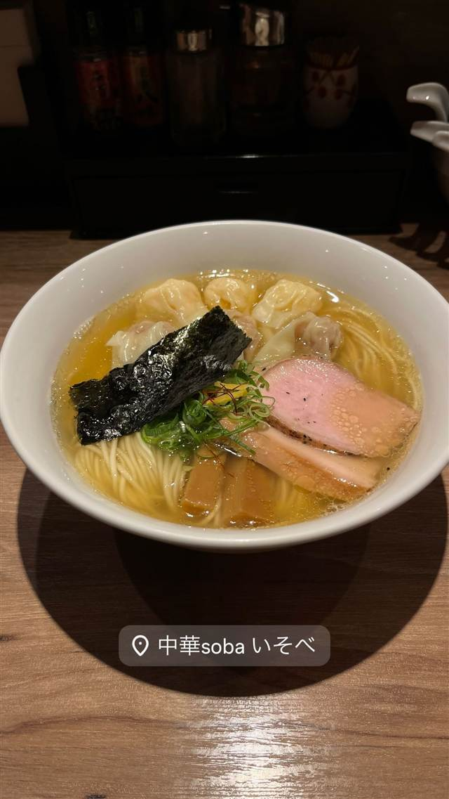

★27中華soba いそべ
50代で一念発起した三代目が作る、えびとポークのワンタン麺
中華soba いそべ
50年続いた家業の中華料理店を、三代目店主が2016年にラーメン専門店として生まれ変わらせた店。50代半ばから池尻大橋の名店『八雲』（浜田山『たんたん亭』の系譜）で一から修業し、白醤油・黒醤油2種のスープと自家製細麺、えび・ポークのワンタンが看板。
TRIVIA
へえ、という話
- 50年続いた家業の中華料理店の三代目が、50代半ばから一念発起してラーメン修行を始めた
- 名店『八雲』仕込みのワンタン麺は『たんたん亭』の系譜を継ぐ
REVIEWS
みんなの声
94.978ラーメンDB3.67食べログ
「白旨黒旨2種スープの完成度」に注目
- 白旨と黒旨2種のスープの完成度の高さを評価する声が多い
- ワンタンのジューシーさや具材一つひとつのクオリティを挙げる人が多い
- 外待ち用の椅子が用意されているなど配慮の行き届いた対応を評価する声もある
ラーメンデータベース 口コミ192件・総合344位・最新 2026-09
| 創業 | 2016年1月15日開業 |
|---|---|
| 系譜 | 先代まで50年続いた中華料理店を、三代目店主がラーメン専門店に転身。池尻大橋『八雲』（浜田山の老舗ワンタン麺店『たんたん亭』の系譜）で修行 |
| 看板 | ワンタン麺（白醤油・黒醤油の2種、えびとポークのワンタン） |
| こだわり | 自家製の細麺、白醤油と黒醤油で仕立てた2種のスープ。えび・ポーク各3個ずつの「にこにこワンタン麺」も人気 |
| 予算 | 昼 ¥1,000～¥1,999 夜 ¥1,000～¥1,999 |
| 定休日 | 水曜 |
| 場所 | 矢口渡駅 東京都大田区多摩川1-20-14 |
| 注意 | 東急多摩川線矢口渡駅から徒歩1分 |
食べたもの：ワンタン麺
NEARBY
近い店・同じ系統の店
-
 ★2
醤油・中華そば 大口駅
中華そば 髙野
元美容師の店主が作る、昆布水に浸した自家製麺の中華そば
昼 ¥1,000～¥1,999 夜 ¥1,000～¥1,999
★2
醤油・中華そば 大口駅
中華そば 髙野
元美容師の店主が作る、昆布水に浸した自家製麺の中華そば
昼 ¥1,000～¥1,999 夜 ¥1,000～¥1,999
-
 ★3
醤油・中華そば 池尻大橋駅
八雲（やくも）
骨を一切使わないのに深いコクの特製ワンタン麺
昼 ¥501～¥1,000 夜 ¥501～¥1,000
★3
醤油・中華そば 池尻大橋駅
八雲（やくも）
骨を一切使わないのに深いコクの特製ワンタン麺
昼 ¥501～¥1,000 夜 ¥501～¥1,000
-
 ★4
醤油・中華そば 六本木駅
入鹿TOKYO 六本木店
鶏・豚・貝・海老を別々に炊く独自のカルテットスープ
昼 ¥1,000～¥1,999 夜 ¥1,000～¥1,999
★4
醤油・中華そば 六本木駅
入鹿TOKYO 六本木店
鶏・豚・貝・海老を別々に炊く独自のカルテットスープ
昼 ¥1,000～¥1,999 夜 ¥1,000～¥1,999
-
 ★5
醤油・中華そば 千歳船橋
中華そば 西川
永福町大勝軒などで8年修行した店主の煮干しそば、百名店5年連続
昼 ¥1,000～¥1,999 夜 ¥1,000～¥1,999
★5
醤油・中華そば 千歳船橋
中華そば 西川
永福町大勝軒などで8年修行した店主の煮干しそば、百名店5年連続
昼 ¥1,000～¥1,999 夜 ¥1,000～¥1,999
-
 ★7
醤油・中華そば 祖師ヶ谷大蔵駅
世田谷中華そば 祖師谷七丁目食堂
柴崎亭店主が手がける、煮干しと小豆島醤油の中華そば
昼 ～¥999 夜 ～¥999
★7
醤油・中華そば 祖師ヶ谷大蔵駅
世田谷中華そば 祖師谷七丁目食堂
柴崎亭店主が手がける、煮干しと小豆島醤油の中華そば
昼 ～¥999 夜 ～¥999
-
 ★8
醤油・中華そば 鷺沼
麺処 懐や
中村屋仕込み、一度に2杯しか作らない淡麗系
昼 ～¥999
★8
醤油・中華そば 鷺沼
麺処 懐や
中村屋仕込み、一度に2杯しか作らない淡麗系
昼 ～¥999